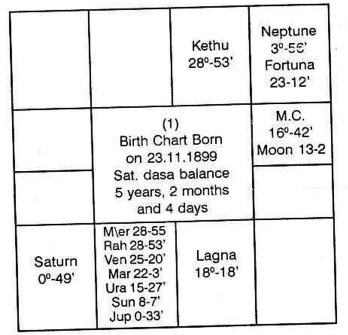
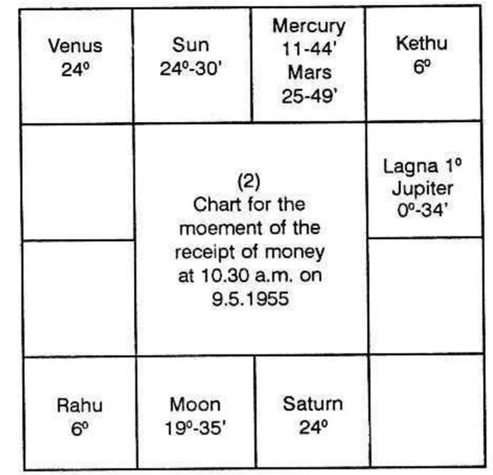

The ascendant was LIBRA. There was sudden gain during the period when he was running Moon Dasa, Moon Bhukti and Jupiter Anthra, on 8th May, 1955. But the money was received on 9th May, 1955. (Monday, Jyeshta star, and in Cancer lagna)

Given below are two charts, namely, (1) the native's birth chart and (2) the chart for the moment when he received money.

Generally it is said that houses 2 and 5 offer one the opportunity to make money by speculation, lottery, betting etc. The other houses do not indicate such sudden gains. If that is so, how can Moon in its dasa especially, in its bhukti, give gains without pains? 10th house indicates profession. Moon rules the 10th house. It also occupies its own rasi. How then has it given unexpected fortune?
The prediction was based on Krishnamurti Padhdhati. A planet may own any house. It may occupy any house. But the sources of one's income and his efforts in any direction are indicated by the lord of the sub - portion in the star. Moon was in Pushyam star ruled by Saturn. Pushyam extends from 3 degrees 20 minutes to 16 degrees 40 minutes in Katak. But Moon was in 13 degree 2 minutes. If you refer to the table you will note that between 12 degrees 53 minutes and 14 degree 53 minutes in the star Pushya ruled by Saturn, Rahu rules the sub. Therefore Moon is under the sway of both Saturn and Rahu. Saturn is lord of 5 and it is in the second bhava though in the third sign Dhanus. Hence, it gives the mind to speculate. Seven planets are in the sign Scorpio and also in the second bhava. It is a truism that Rahu or Kethu will ever be stronger than the lord of the house in which they are posited and also the planets with which they are conjoined. Hence, Rahu in Vrischika is to give the results of the lord of the sign in which it was posited (which in this case is Mars), and also the results of the other planets with which it was conjoined. Rahu is stronger than the other planets in the second house and its lord, Mars. As Moon was in Saturn's star Pushyam and the sub of Rahu, Moon derives the power to give its results through the affairs indicated by the 5th and the 2nd house.
When Moon's dasa was on, the planet in the Moon's star or Moon's sub can offer those results indicated by Moon. The only planet thus gaining the strength of Moon is Jupiter which was in Scorpio (Vrischika) in its own star Visakam and in the sub of Moon.
If one is to gain in a competition or in betting, the opponent will lose equally. The opponent is indicated in all horoscopes by the seventh cusp and house Loss is indicated by the 12th house. Therefore, the 12th house to the seventh, is the 6th house, to the native. Therefore, the lord of the 6th house and the planet in 6 will bring about loss to the opponent and the native will gain. Jupiter is the lord of the sixth house. No planet in Jupiter star. Hence, Jupiter and Moon alone can give this result. That is to bring about loss to the opponent and gain, suddenly to the native through betting etc., provided the dasa lord has anything to do with the fifth and the second houses.
According to the Udu dasa system and according to Gochara, why should he have the beneficial result on 9 - 5 - 1955. All along, it was discussed that the planets, Moon and Jupiter, promise gains by speculation. That Swabhukti will be indifferent or bad, is generally predicted by astrologers who simply reproduce the slokas without doing research based on actual facts. It should be noted that during the time when Jupiter transits the sign ruled by the lord of dasa, the dasanatha will confer favourable results. Therefore, in the present case, at the time Jupiter transits in Cancer ruled by Moon, lucky time has to be predicted. According to Krishnamurti Padhdhati, the sub - portion should be ruled by Moon. Actually on 8th and 9th May, 1955, Jupiter was in 3 degrees 25 to 30 minutes in Cancer.
One may ask why this native should not again similarly secure such a gain in Moon dasa, Jupiter sub - period and Moon or Jupiter sub - period. He is correct but hasty. He has to note whether, at that time Jupiter will transit in the sign ruled by dasanatha Moon or Bhuktinatha Guru. This position will not be repeated. But during that period, the native had larger income from his permanent possessions and improvement in service.
Always the dasa system, and Gocharam, will agree. One will enjoy the results without fail if K.P. is followed.
At the moment the native received the cash, the lagna was the first degree in Cancer and Moon was in Jyeshta Mercury's star in Mars sign Vrischika. The day was Monday ruled by the dasanatha Moon.